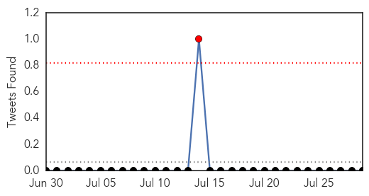
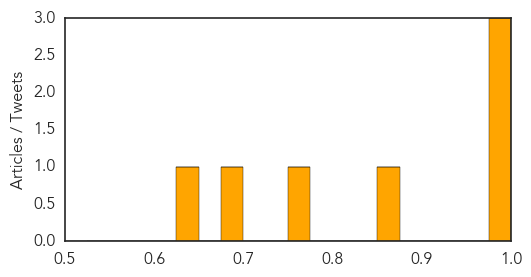
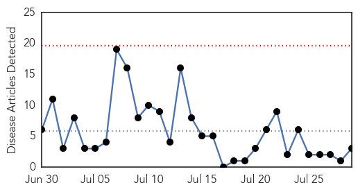
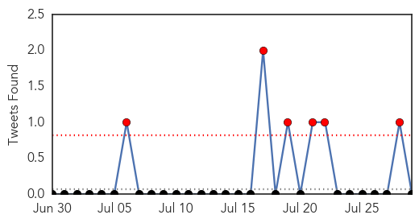
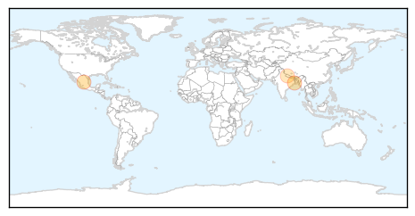

Influenza
30-Day Web Trend
1 alerts, 0 warnings

30-Day Twitter Trend
1 alerts, 0 warnings

Article Locations

Article Confidences
Top Articles:
- 0.998
- West Africa now threatened by Avian Flu
- 0.994
- Some Poultry Vaccines Allow More Virulent Viruses to Evolve
- 0.991
- Some vaccines support evolution of more-virulent viruses
- 0.874
- The Flu Crew: Med students provide vaccinations to community
- 0.751
- July 28, 2015 Archives
- 0.686
- More effective bird flu vaccine in the works
- 0.631
- Bird flu precautions in place
Top Tweets:
-
No tweets found for Jul 29, 2015
Cholera
30-Day Web Trend
0 alerts, 0 warnings

30-Day Twitter Trend
6 alerts, 0 warnings

Article Locations
Article Confidences
Top Articles:
Top Tweets:
-
No tweets found for Jul 29, 2015